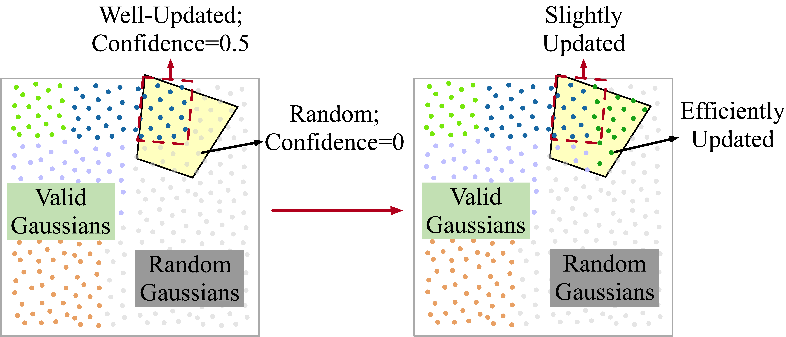
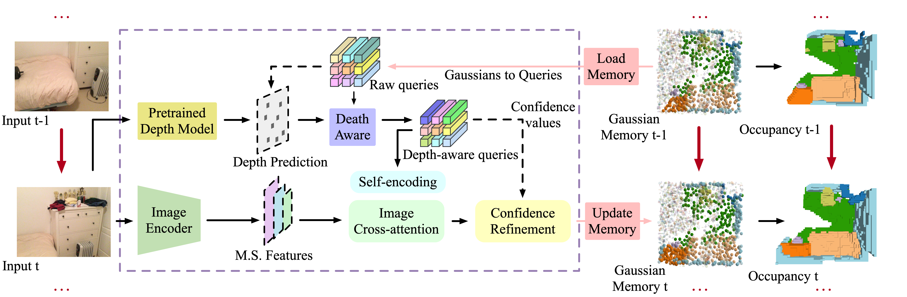
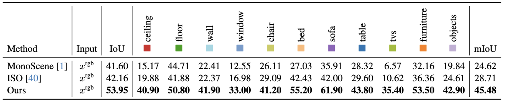
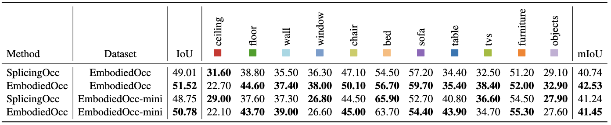

Overview of our contributions. Targeting progressive embodied exploration in indoor scenarios, we formulate an embodied 3D occupancy prediction task and propose a Gaussian-based EmbodiedOcc framework accordingly. Our EmbodiedOcc maintains an explicit Gaussian memory of the current scene and updates this memory during the exploration of this scene. Both quantitative and visualization results have shown that our EmbodiedOcc outperforms existing methods in terms of local occupancy prediction and accomplishes the embodied occupancy prediction task with high accuracy and strong expandability.
Local Occupancy Prediction Module and Depth-Aware Branch
We use a set of 3D semantic Gaussians to represent an indoor scene and update the Gaussian-based representation according to semantic and structural features extracted from the input image. In the local occupancy prediction module, we use a depth-aware branch to provide local structural information for the update of each Gaussian. Along a specific ray, Gaussians distributed in front of the true depth point are likely to model the empty semantic (as Gaussian A). Gaussians distributed behind the true depth point closely are likely to model valid semantics (as Gaussian B). Those Gaussians that are distributed behind the true depth point but are too far away require more information to guide their updates (as Gaussian C).
Gaussian Memory Updated Online
We initialize the global scene with uniform 3D semantic Gaussians and progressively update local regions observed by the embodied agent. During each update, the Gaussians within the current frustum are taken from the memory and updated according to their confidence values. Confidence values of those well-updated Gaussians are set to a certain value between 0 and 1, while others set to 0. The former will be updated slightly and the latter efficiently.

EmbodiedOcc: An Embodied Framework
We maintain an explicit global memory of 3D Gaussians during the exploration of the current scene. For each update, the Gaussians within the frustum are taken from the memory and updated using semantic and structural features extracted from the monocular RGB input. Each Gaussian has a confidence value to determine the degree of this update. Then we detach and put these updated Gaussians back into the memory. During the continuous exploration, we can obtain the current 3D occupancy prediction using a Gaussian-to-voxel splatting module whenever we need.

Results
Local Occupancy Prediction
We evaluate our local occupancy prediction module on the Occ-ScanNet dataset. The results indicate that our local occupancy prediction module outperforms state-of-the-art methods.

Embodied Occupancy Prediction
We splice the local occupancy obtained from our local occupancy prediction module to serve as the baseline and evaluate the performance of our EmbodiedOcc. It can be observed that our EmbodiedOcc exhibits superior prediction of the scene, which is achieved through the integration of different views.

Visualizations
We select two scenes to show the update of Gaussian memory and corresponding global occupancy with continuous exploration. As the Gaussians transition from random to increasingly ordered, the occupancy prediction of the current scene becomes more accurate and complete.

Bibtex
@misc{wu2024embodiedoccembodied3doccupancy,
title={EmbodiedOcc: Embodied 3D Occupancy Prediction for Vision-based Online Scene Understanding},
author={Yuqi Wu and Wenzhao Zheng and Sicheng Zuo and Yuanhui Huang and Jie Zhou and Jiwen Lu},
year={2024},
eprint={2412.04380},
archivePrefix={arXiv},
primaryClass={cs.CV},
url={https://arxiv.org/abs/2412.04380},
}